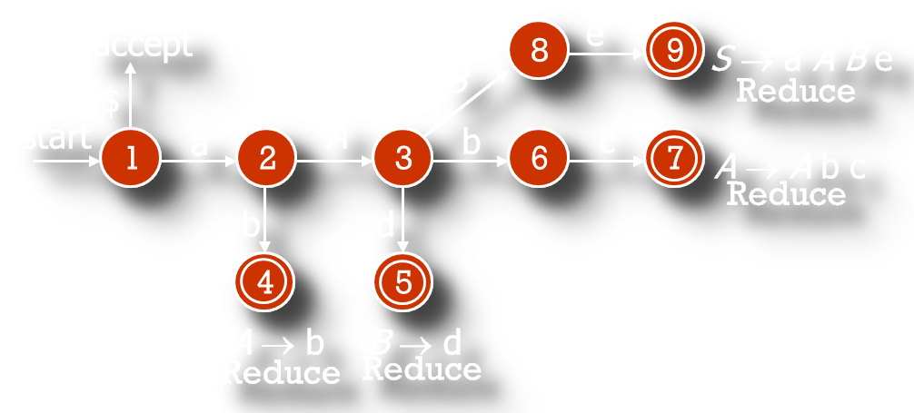
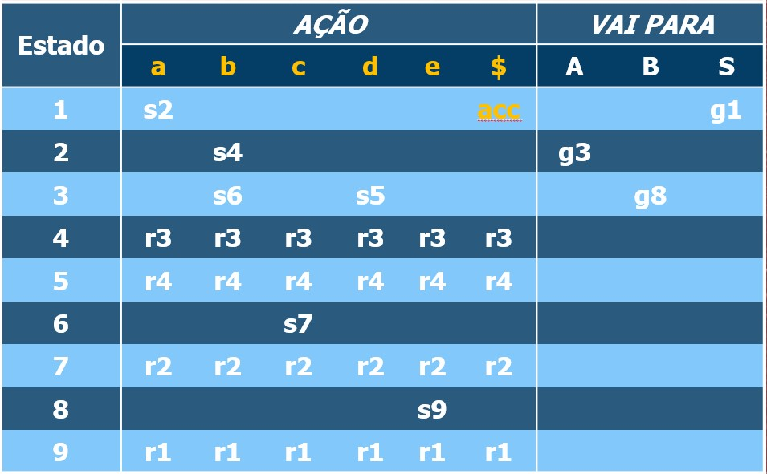

Frank Coelho de Alcantara -2021
Se uma declaração possui mais de uma derivação à esquerda, em uma determinada gramática, esta gramática é ambígua.
Se uma declaração possui mais de uma derivação à direita, em uma determinada gramática, esta gramática é ambígua.
A derivação à direita e a derivação à esquerda podem ser diferentes e, ainda assim, a gramática pode não ser ambígua.
A ambiguidade é caracterizada pela existência de árvores sintáticas diferentes para a mesma declaração.
Considere a gramática a seguir:
A gramática definida por este fragmento de regras de produção é conhecida por ser ambígua e permitir a criação de, pelo menos, duas árvores sintáticas diferentes. Para a declaração: $$if\space\space EXPR \space\space then\space\space if\space\space EXPR\space\space then\space\space STMT\space\space else \space\space STMT$$
A ambiguidade ocorre por que as duas regras podem ser usadas intercambiavelmente. E pode ser resolvida se explicitarmos melhor as regras.
Criamos uma gramática onde o else seja referente ao if imediatamente anterior.
Assim montamos if com else, ou sem, na ordem certa.
Classe de parsers que usa um ponteiro apontando para o próximo símbolo na string;
Varrem das folhas até a raiz;
Usam uma classe de gramática especial chamada de $LR(k)$;
Onde O $k$ representa o número de símbolos previsto.
Considere e gramática a seguir para a string "n+n*n" sem as aspas.
Podem ser construídos para qualquer linguagem de programação sobre uma gramática livre de contexto. Podemos criar gramáticas LR que não são livres de contexto, mas estas tem pouca ou nenhuma utilidade em Linguagens de Programação.
O algoritmo é um método de parsing sem backtracking, baseado em Shift-Reduce que pode ser implementado de forma mais eficiente, mantendo complexidade baixa.
Pode detectar erros de sintaxe assim que seja possível e identificar estes erros fazendo uma varredura da esquerda para a direita.
A classe de gramáticas $LR$ é um subconjunto da classe $LL$.
Como não temos nenhuma função para adivinhar o futuro, podemos usar o backtracking. A cada opção, mantemos uma árvore na memória, tentamos uma regra de produção. Se não der certo, voltamos até o ponto da opção e tentamos outra regra. Nem pensar!
Opcionalmente, podemos definir um prefixo viável, um prefixo é um handle que pode aparecer na pilha e permita a derivação.
A ideia é construir uma $MEF$ para reconhecer os prefixos viáveis destacando, um ou dois tokens, do resto da string. Realizando a redução sempre que reconhecemos um token
Considere o conjunto de regras de produção a seguir para a string: “abbcde” sem as aspas.
| Pilha | Buffer | Operação |
|---|---|---|
| $\$$ | $abbcde\$$ | Shift |
| $a$ | $bbcde\$$ | Shift |
| $ab$ | $bcde\$$ | Reduce |
| $aA$ | $bcde\$$ | Shift |
| $aAb$ | $cde\$$ | Shift |
| $aAbc$ | $de\$$ | Reduce |
| $aA$ | $de\$$ | shift |
| $aAd$ | $e\$$ | Reduce |
| $aAB$ | $e\$$ | Shift |
| $aABe$ | $\$$ | Reduce |
| $S$ | $\$$ | Shift |
| $\$$ | $\$$ | Accept |
A solução com a MEF inclui muitas repetições, voltamos ao estado inicial a cada nova avaliação da pilha;
Só alteramos a parte do string que corresponde ao Handle;
Nós queremos que complexidade seja, no máximo, $O(n)$;
Cada gramática irá requerer uma MEF diferente.
Considere o conjunto de regras de produção a seguir para a string: “abbcde” sem as aspas.
Considere o conjunto de regras de produção a seguir para a string: “abbcde” sem as aspas.
Ações
Vai Para
string: abbcde
| Pilha | Estados | Buffer |
|---|---|---|
| $\$$ | $\$1$ | $abbcde\$$ |
string: abbcde
| Pilha | Estados | Buffer |
|---|---|---|
| $\$a$ | $\$12$ | $bbcde\$$ |
string: abbcde
| Pilha | Estados | Buffer |
|---|---|---|
| $\$ab$ | $\$124$ | $bcde\$$ |
string: abbcde
| Pilha | Estados | Buffer |
|---|---|---|
| $\$aA$ | $\$12$ | $bcde\$$ |
string: abbcde
| Pilha | Estados | Buffer |
|---|---|---|
| $\$aA$ | $\$123$ | $bcde\$$ |
string: abbcde
| Pilha | Estados | Buffer |
|---|---|---|
| $\$aAb$ | $\$1236$ | $cde\$$ |
string: abbcde
| Pilha | Estados | Buffer |
|---|---|---|
| $\$aAbc$ | $\$12367$ | $de\$$ |
string: abbcde
| Pilha | Estados | Buffer |
|---|---|---|
| $\$aA$ | $\$12$ | $de\$$ |
string: abbcde
| Pilha | Estados | Buffer |
|---|---|---|
| $\$aAd$ | $\$123$ | $de\$$ |
string: abbcde
| Pilha | Estados | Buffer |
|---|---|---|
| $\$aAb$ | $\$1235$ | $e\$$ |
string: abbcde
| Pilha | Estados | Buffer |
|---|---|---|
| $\$aAB$ | $\$123$ | $e\$$ |
string: abbcde
| Pilha | Estados | Buffer |
|---|---|---|
| $\$aABe$ | $\$1238$ | $e\$$ |
string: abbcde
| Pilha | Estados | Buffer |
|---|---|---|
| $\$aABe$ | $\$12389$ | $\$$ |
string: abbcde
| Pilha | Estados | Buffer |
|---|---|---|
| $\$S$ | $\$1$ | $\$$ |
Considere a regra $A \rightarrow XY$, podemos representar o progresso na regra.
O $\cdot$ representa o progresso de formação da regra no parser.
Look-Ahead LR Parser>
Inventado por Frank DeRenner em 1969;
A divisão em itens do LR pode implicar em um grande número de repetições;
LALR, tenta reduzir o número de estados agrupando itens iguais.
Basicamente é um SLR, com menos estados e com toda a segurança do LR.